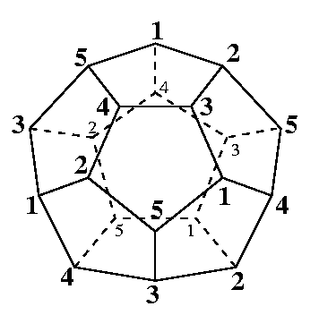

<HTML>
<HEAD>
<TITLE>Poincare sphere</TITLE></HEAD>

<BODY>
<H1>Poincare sphere</H1>

<DL>
<DT>$B5-=R(B</DT>
<DD>
$B%[%b%m%8!<72$,5eLL$HF1$8$J$N$K5eLL$HF1Aj$G$J$$$b$N$H$7$F(B
$BCN$i$l$k!#@5(B12$BLLBN$NBPD:LL$r(B5/$B&P2sE>$NBP1~$GF10l;k$7$FF@$i$l$k(B
($B2<?^$GF1$8HV9f$ND:E@$rF10l;k$9$k!#(B)$B!#(B<BR>
<CENTER>

</CENTER>
$B$3$3$G%G!<%?$H$7$FDs<($9$k$N$O$3$l$r;03Q7AJ,3d$7$?$b$N$G!"(B
Bjorner$B$H(BLutz$B$K$h$C$F<($5$l$?!"8=:_:G$b>/$J$$LL$N?t(B
(16$BD:E@(B90$B%U%!%;%C%H(B)$B$N$b$N!#$3$l$O!"(Bbistellar exchange
(flip)$B$r6I=jJQ7A$H$7$F(Bsimulated annealing$B$N$h$&$J%R%e!<%j%9%F%#%/%9$G(B
$B:GE,2=$9$k$3$H$K$h$C$FF@$i$l$?$H$$$&!#(B
</DD>
<DT>$BAH9g$;J,3d$K4X$7$F(B</DT>
<DD>
$B$3$N%]%"%s%+%l5eLL$O%[%b%m%8!<$,5eLL$HF1$8$G$"$k$?$a!"(BCohen-Macaulay
$B$G$"$k$3$H$K$J$k$,!"5eLL$HF1Aj$G$J$$$?$a!"(Bconstructible$B$G$O$J$$!#(B
(Constructible$B$JB?MMBN$O5eLL$+5eBN$H$J$k$N$G!#(B)
</DD>
<DT>$B%G!<%?(B</DT>
<DD>
<A href="poincare.dat">poincare.dat</A>
</DD>
<DT>$BI=(B</DT>
<DD>
<TABLE BORDER>
<TR><TD>vertex decomposable?</TD><TD>no</TD></TR>
<TR><TD>extendably shellable?</TD><TD>no</TD></TR>
<TR><TD>shellable?</TD><TD>no</TD></TR>
<TR><TD>constructible?</TD><TD>no</TD></TR>
<TR><TD>Cohen-Macaulay?</TD><TD>yes</TD></TR>
<TR><TD>topology</TD><TD>Homology sphere</TD></TR>
<TR><TD>f-vector</TD><TD>(1,16,106,180,90)</TD></TR>
<TR><TD>h-vector</TD><TD>(1,12,64,12,1)</TD></TR>
<TR><TD>made by</TD><TD>Poincare, $B;03Q7AJ,3d$O(BBjorner&Lutz</TD></TR>
</TABLE>
</DD>

<DT>$B;29MJ88%(B</DT>
<DD>A.Bjorner and F.H.Lutz,
    Simplicial manifolds, bistellar flips and a 16-vertex
    triangulation of the Poincar\'e homology 3-sphere",
    to appear in Experimental Mathematics.
<DD>F.H.Lutz,
    Triangulated manifolds with few vertices and vertex-transitive group actions,
    Shaker Verlag (1999).
</DL>

<HR>
<A HREF="index.html">$BLa$k(B</A>

</BODY>
</HTML>


